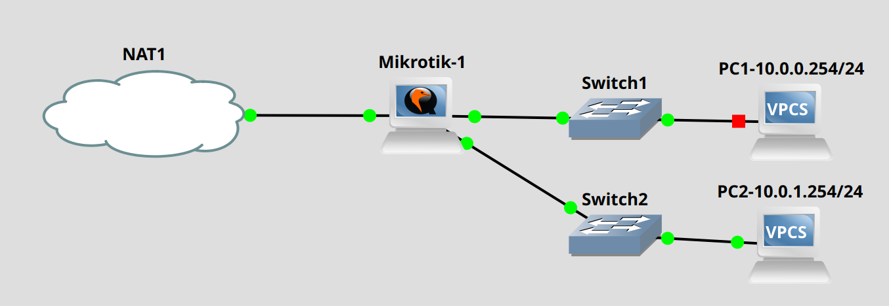

Pràctica The Dude
Escenari
Escenari amb GNS3
Has de partir d'un escenari similar al següent:

Configuració
Configura el Mikrotik amb les adreces i serveis necessaris per a que puga donar ipsper dhcp del rang que apareix a la figura.
Wine
Per a usuaris de Linux
Has de tindre instal·lat Wine al teu equip si eres usuari de Linux.
Client de The Dude
Pots consultar aquest tutorial per a instal·lar el client.
Servidor The Dude
Pots descarregar el client i el servidor de la web de Mikrotik
Visualitza aquest tutorial per a instal·lar el servidor.
Versions iguals
És necessari que el client i el servidor siguen la mateixa versió.
Bot de Telegram
Per a aquesta pràctica necessites que un ChatBot de Telegram t'envie notificacions quan un dels serveis que estem monitoritzant presenta problemes.
-
Consulta ací com crerar un
ChatBotdeTelegram. -
Consulta ací com obtindre el
IDdel teu xat amb elbotde Telegram.
Passos de la pràctica
Crea l'escenari
Amb GNS3 crea l'escenari descrit, instal·la a les màquines corresponents els clients i els servidors de The Dude i connecta't al panell de control.
Dispositius i links
Afegix dispositius i links per a poder monitoritzar l'escenari. Ha de quedar-te d'una forma molt semblant a aquesta.
Crea una notificació de Telegram
Crea una notificació com aquesta:
Test de notificació
Quan crees la notificació pots polsar el botó de Test per a comprovar que funciona correctament.
Assignar notificació
Recorda que una vegada creada la notificació, la pots assignar al servei que vullgues, però a més a més has d'indicar que utilitze notificacions.
Provoca una ruptura en el servei de ping
Assigna la notificació al servei de ping a l'equip 10.0.0.254 i després apaga aquest equip, de manera que provoques que el ping falle. Si tot està ben configurat has de rebre un missatge al Telegram que t'informe de la caiguda del servei.